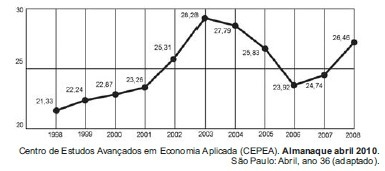
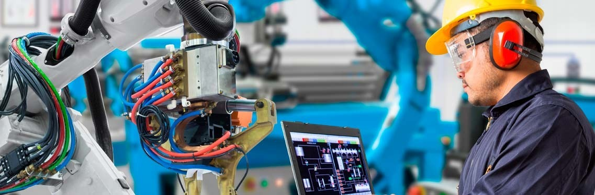

A revolução começou nas oficinas e laboratórios. O SENAI acaba de inaugurar sua mais nova plataforma de divulgação tecnológica: um jornal digital focado única e exclusivamente em expor o que há de melhor produzido dentro de suas portas.
O objetivo desta iniciativa é claro: dar voz aos alunos e professores, transformar ideias de fim de semestre em patentes reais e conectar nossos talentos diretamente com grandes empresas do mercado de trabalho.

"Não queremos que projetos incríveis fiquem restritos às bancadas e oficinas", declarou a diretoria. Através das abas de submissão, qualquer aluno ou professor pode enviar seu trabalho de forma prática e rápida.
Alunos do 3º semestre desenvolveram um braço robótico autônomo capaz de identificar e separar lixo eletrônico. Utilizando sensores de visão computacional, a invenção promete reduzir em 40% o tempo de triagem nas usinas locais. As empresas da região já demonstraram interesse na patente.
Desenvolvido pela turma de Eletrotécnica, o novo sistema utiliza sensores de umidade do solo integrados a painéis solares para otimizar o uso da água nas estufas do campus. O projeto reduziu o desperdício hídrico em 30% nas primeiras semanas de teste prático.

Após vencer o prêmio nacional de Inovação em Software Industrial, o professor Roberto Alves deu uma declaração forte aos nossos repórteres. "Se nossos alunos não aprenderem a programar as máquinas de hoje, serão substituídos por elas amanhã. É por isso que nossos laboratórios operam com rigor máximo."